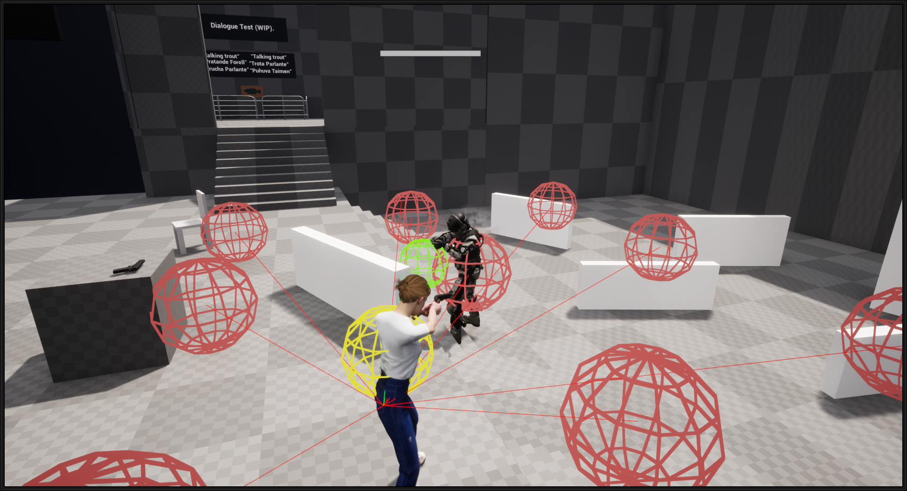
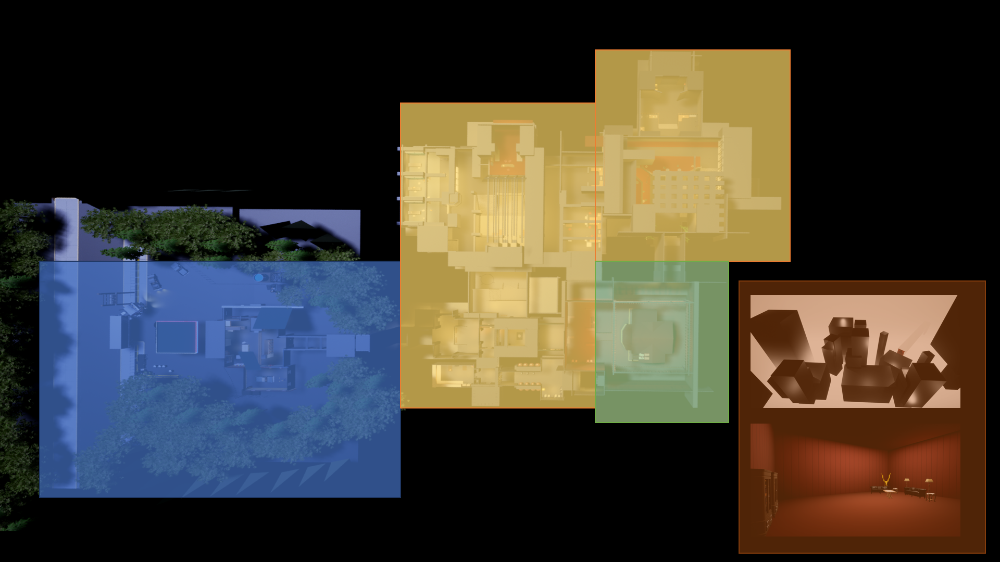
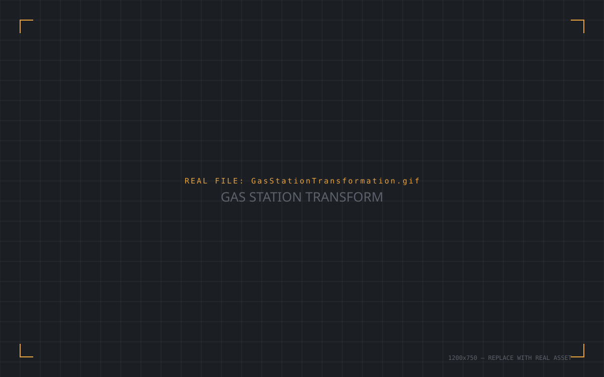
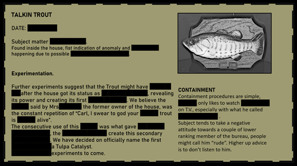

Summary
Players venture inside a hidden paranormal containment facility, searching for the heart and source of its corruption. The level runs on a three-part loop: exploration, where the player investigates and finds clues about what happened there; reward, where a discovery opens a new area or exposes more narrative; and blocker, where a combat event or puzzle holds up progress until it's solved.
Concept
This was a solo technical project built to recreate elements of Remedy's 2019 game Control — specifically its environmental interactions and basic enemy behavior. The constraint was one month, both to ship something complete and to get properly familiar with Unreal Engine's tools. Level design and narrative weren't the primary focus, but the world still needed to be a place where those gameplay ingredients could live believably.
- Have working systems and gameplay, not just a pretty blockout.
- Learn Unreal Engine more deeply by exploring its tools directly.
- Develop a level with real narrative intent behind it.
- Have fun with it.
Systems — power core & door scripting
The project's base came from a Game Dev Pantry breakdown of Control's telekinesis, which I reverse-engineered further to add an interaction system and gun shooting on top. Doors act as the obvious blockers preventing progress, which is why I focused the interaction system around them.
Building one shared interaction system as the core — used across collectibles, throwables, power cores, and doors — saved a lot of time versus writing separate scripts for each, and meant everything could connect easily: a collectible pickup can open a door, a power core can spawn a collectible, and so on.
Enemy AI
Tackling AI felt intimidating at first, so I broke it into parts and focused on the piece I could get the most out of: enemy positioning. In Control, enemies spread out and use the space to promote player movement — that behavior was what I wanted to recreate.
After digging into the documentation, Unreal's environment query system looked like the best fit for the time I had. It takes the player's position as a reference point, draws nine spheres around the enemy, and reads the surrounding terrain for cover opportunities based on asset height. That was enough to approximate Control's smarter enemy behavior. I also built a flying-enemy placeholder to represent enemy variation, with spawning handled through trigger volumes and defined spawn locations — a random number of ground enemies per trigger, while flying enemies were always placed manually in the editor.

Structure
I followed a four-part pacing structure to give the level a rhythm — pacing is one of the aspects of level design I care most about, since it shapes the player's experience directly, not just the space around them.
2. Development — grow what the player already knows, layering in complexity and a twist on the mechanics while the narrative builds toward a high-intensity point.
3. Twist — the highest-intensity beat, combat and narrative both. The player reaches the main goal but is handed a new challenge on top of it.
4. Ending — a post-climax stretch that gradually lowers intensity and paces the player down to a narrative conclusion.

Area breakdown
Researching Brutalist architecture and gathering references was the first stop before blockout — its symmetry and repetition translated well into patterns that help depth perception and let the player build a mental map of the space.
The Gas Station
The level opens in an open, explorable area — setting expectations and teaching the player how to approach the level, while giving them a first taste of the golden path without forcing it. It's big enough to hold secrets and hidden paths, but small enough that its structure and explorable spaces stay legible. The intent was to let the player explore, get used to the mechanics, interact with a few objects, and get curious enough to chase collectibles.


AWE Exposition Area
This area presents the level's main goal, foreshadowing and teasing the space the player eventually has to reach. It's only accessible after solving a puzzle, and functions as a downbeat — a place to take in the narrative and hunt collectibles at a slower pace, incentivized enough that the player lingers for a few minutes.
Since the next major beat is a combat encounter, I placed a control point (save area) nearby as a safety net if the player fails or wants to come back later — and because it sits between two major areas, it also lets the player move between landmarks easily and avoid backtracking.
Combat
The goal was to keep the player moving — either by pinching them between enemies, or by giving them a clear line of sight or better cover to fight from. For flying enemies specifically, the area has a double-height space so players can reach their altitude and deal with them more efficiently, instead of fighting straight upward the whole time.
Ground enemies needed a constant flow of pressure — opening opportunities, then closing them and cutting sightlines, so the encounter couldn't collapse into the player camping one spot or finding a single-location solution.
Narrative
Narrative-wise, I use this as a backbone and guide for what the space is. Level and narrative feed into each other; a corridor is just a corridor and a hub is just a hub until narrative gives it a reason to exist. A level stops reading as a sequence of rooms and starts reading as a place once the story's context starts to feed into it.

I went back to the narrative and punctuated elements to give every area a reason to exist. I asked questions like, How would the Bureau exploit this entity for its own advantage? What elements would a supernatural office require, and how can I match them to a real one? I listed elements they would need; in this case it was archives and a containment facility.
Once I had an idea of what these elements were, I jumped back to references and decided how the blockout would work.
Collectibles
Collectibles are scattered across key locations on the map, giving the player extra information about the environment and a bit of background on the narrative's elements — small, optional context rather than mandatory reading.
Closing thoughts and post-mortem
This ended up being a fairly dense level, with a lot of smaller interconnected rooms — and I like that density, since it came from designing for the actual function of each space rather than filling area for its own sake. There are still a few things I'd revisit:
- Polish the pacing further, and build a stronger sense of ramping intensity between beats — especially making that final encounter hit harder and feel more engaging.
- Add more breathing room between some connected spaces so they don't feel cramped on top of each other — particularly right before the first combat encounter and the first power-core puzzle.
Control has been a huge influence on my work as a level designer, and finally getting to explore a level directly tied to that world was a genuinely fun experience. Thanks for reading.